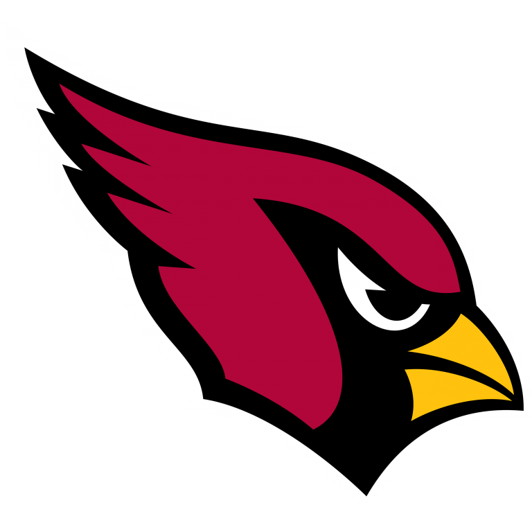
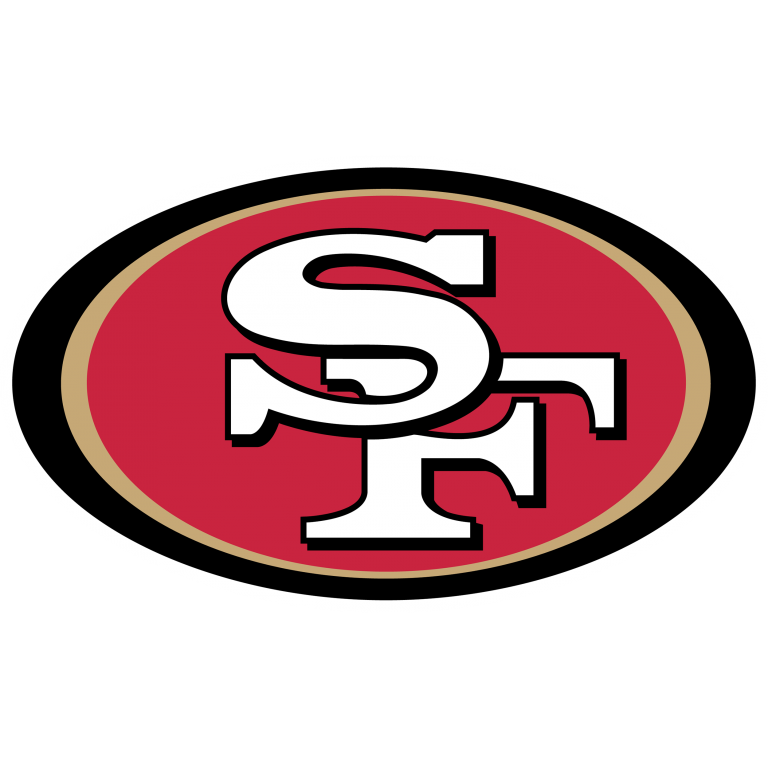
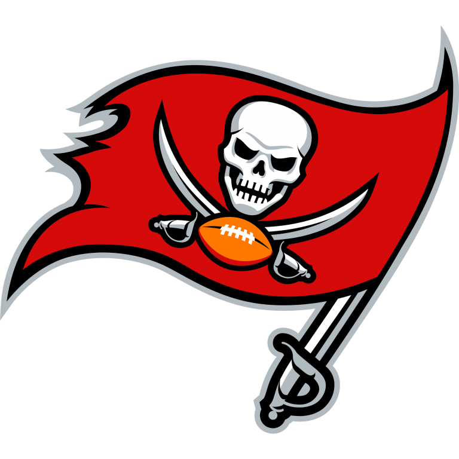
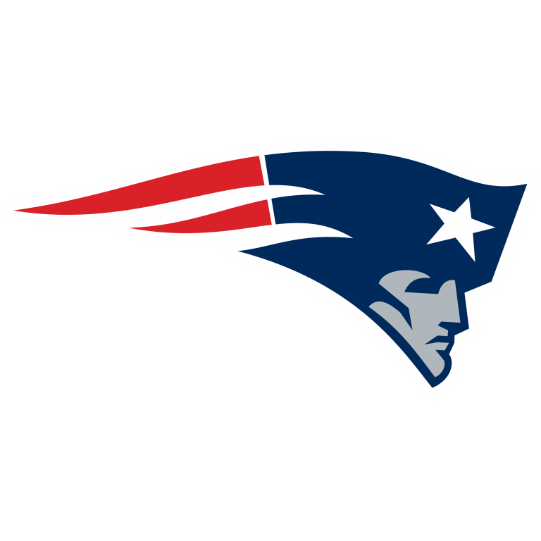
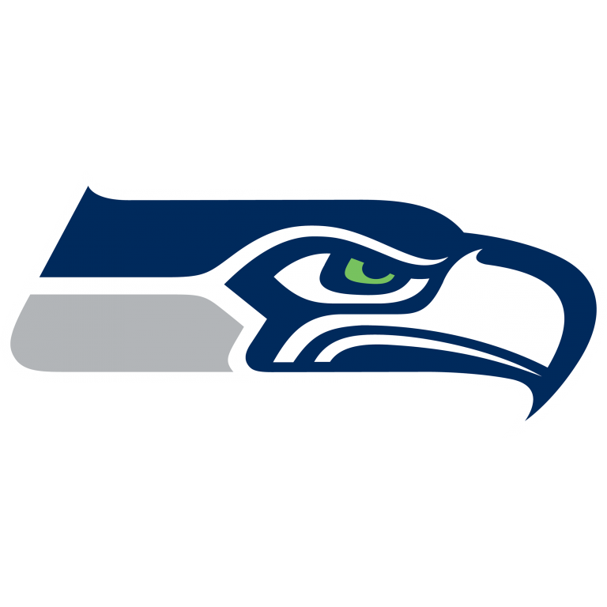

Week 10 of the 2020 NFL season provided some incredible drama and some shocking storylines, including the news of Drew Brees' injury that sidelined him for the second half of the Saints game against the 49ers on Sunday. Kyler Murray's hail-mary completion to DeAndre Hopkins to win the game against the Bills left NFL fans in awe and Texans and Bills fans in despair, as the Cardinals snatched the top spot in the NFC West from Seattle, with the two facing off this Thursday. With plenty more action from around the league, what are the biggest questions heading into Week 11?
Can the Saints still make the playoffs with Drew Brees injured?
The New Orleans Saints have been one of the most well-coached and well-run football teams in the league for the past few years now, and have made the playoffs 3 straight times. After a shaky 1 - 2 start to 2020, they won 6 straight including a 38 - 3 blowout win over Tom Brady's Buccaneers, and looked to be in prime position to retain their NFC South division title. That is, until all-time great QB Drew Brees suffered a collapsed lung and broken ribs that could sideline him for more than 3 weeks. With the Buccaneers just half a game behind the Saints, it's looking very possible that this untimely injury will lead to the division title heading to Tampa Bay. That would leave the Saints fighting for a Wild Card spot in order to make the playoffs. Will they be able to play January football for a fourth straight year?
While Brees is sidelined, the Saints will use former Buccaneers QB Jameis Winston as their starter, who we all know is very capable of throwing passes to the other team rather than his own. Assuming the best case scenario, Brees will be back for Week 14 when the Saints take on a very poor Eagles side, and while he would be out, New Orleans would play Atlanta twice and the Broncos once. Despite their 3 - 6 record, Atlanta have been playing better recently and have won 2 straight, so winning both games against the Falcons may not be feasible, however the Broncos should present no challenge, especially with how well the Saints defense is playing. Realistically then, the Saints will go 2 - 1 at best or 1 - 2 at worst in these upcoming weeks, giving them a 9 - 3 record or a 8 - 4 record. Given that the current #8 seed in the NFC is the Bears at 5 - 5, the Saints should be safe, even if they go 0 - 3 with Winston in. But a home playoff game does look doubtful for New Orleans at the moment.
Who will win the NFC West?
The NFC West is by far and away the most competitive division in football, and if the 49ers were fully healthy all season, it would be even tighter. Currently, 3 teams - the Cardinals, Rams, and Seahawks (all 6 - 3) - sit atop the division after Los Angeles beat Seattle and the Cardinals got a miracle win over the Bills on Sunday. Make no mistake, this division is coming down to some crucial Week 17 games in which the Seahawks travel to San Francisco to take on the 49ers, and the Cardinals play the Rams in a potential 'win the game and you win the division' matchup. Who has the upper edge at the moment, and who will secure that home playoff game?
These are the remaining schedules for each team:
Seahawks
| Week 11 | Week 12 | Week 13 | Week 14 | Week 15 | Week 16 | Week 17 |
|---|---|---|---|---|---|---|
|  |  |
 |
 |
 |
 |
Rams
| Week 11 | Week 12 | Week 13 | Week 14 | Week 15 | Week 16 | Week 17 |
|---|---|---|---|---|---|---|
|  |  | |
 |
Cardinals
| Week 11 | Week 12 | Week 13 | Week 14 | Week 15 | Week 16 | Week 17 |
|---|---|---|---|---|---|---|
|
|
The Seahawks have arguably the easiest schedule and should be able to beat the Eagles, Giants, Jets, and Football Team, and also probably the 49ers too, taking their win total up to 11 without counting their games versus the Rams and Cardinals. The Rams and the Cardinals both have similar schedules, although the Rams' is slightly harder. It also has to be mentioned that the Seahawks are on a bit of a downward trend having lost 3 of their last 4 games, with Wilson not playing well in any of the losses, and this weeks TNF matchup against the Cardinals will really test their strength of character. Seattle also has a disadvantage right now in that they lost to both the Rams and the Cardinals, and as such do not hold the tie-breaker over either of those teams.
At the end of Week 17 though, I suspect it will be Kyler Murray and the Arizona Cardinals who clinch the division. They are on so much of a roll right now, with Kyler playing football worthy of MVP consideration, and they are probably the most balanced of the 3 teams. That hail-mary play to Hopkins was special too, and it will give them a lot of confidence heading into the final stretch of the year. The Cardinals will take the West.
Could the Dolphins really win the AFC East over the Bills?
The Miami Dolphins have been arguably the shock of the season. They started 1 - 3 and everybody thought it would be another one of those seasons for Miami, but they have managed to pull off 5 straight wins thanks to their incredible defense and immense poise of their young rookie QB Tua Tagovailoa. That puts them at 6 - 3, while the Buffalo Bills, who have played one more game and are on a bye in Week 11, are 7 - 3. With the Dolphins playing as well as they are, is there a real chance that they will amazingly manage to secure a home playoff game by winning their division over Buffalo?
Yes, and I think it could very easily happen. Miamis next 3 games are the Broncos, Jets, and Bengals, all of which they should win meaning a 9 - 3 record by Week 14. They will then lose in Week 14 against the Chiefs, and then probably win their next 2 games against the Patriots and Raiders. That puts them at 11 - 4 heading into Week 17. Similarly, the Bills should win all of their games before Week 17 except Week 14 against the Steelers, also putting them at 11 - 4. That means a Week 17 showdown between Miami and Buffalo to see who will win the division. Now, if the game was in Miami, then I think the Dolphins would definitely win because numerous teams have had trouble going to Miami this season, but unfortunately for the Dolphins its a late December game in Buffalo, which means potential snow and bad weather.
So in the hypothetical but very realistic situation in which both the Bills and Dolphins are 11 - 4 heading into Week 17, the Bills would probably win. Miamis defense though has been playing so good that I think currently they have the second best defense behind Pittsburgh, and the rookie QB Tua Tagovailoa is 3 - 0 as a starter with 5 TD and 0 INT in those 3 games, so a Week 17 win at Buffalo is absolutely on the cards. It would be the shock of the year if the Dolphins won the AFC East, because everybody coming in thought it would be Buffalo or New England who would win the AFC East, and nobody suspected Miami. A lot of credit has to go to Brian Flores as he has done a terrific job in his second year coaching this great franchise.